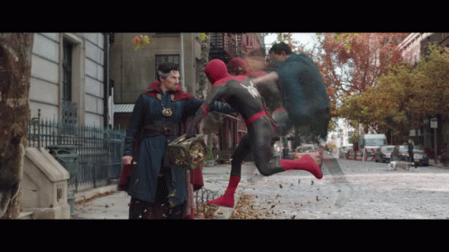

Spider-Man: No Way Home
Spider-Man: No Way Home este un film cu supereroi american lansat în anul 2021 bazat pe personajul Omul-Păianjen din universul Marvel Comics, co-produs de Columbia Pictures și Marvel Studios și distribuit de Sony Pictures Releasing. Este continuarea filmelor Omul-Păianjen: Întoarcerea acasă (2017) și Omul-Păianjen: Departe de casă (2019) și este al 27-lea film din Universul Cinematic Marvel (MCU). Este regizat de Jon Watts, scris de Chris McKenna și Erik Sommers, și îi are pe Tom Holland în rolul lui Peter Parker / Omul-Păianjen împreună cu Zendaya, Benedict Cumberbatch, Jacob Batalon, Jon Favreau, Jamie Foxx, Willem Dafoe, Alfred Molina, Benedict Wong, Tony Revolori, Marisa Tomei, Andrew Garfield și Tobey Maguire
În film, Parker îl roagă pe Dr. Stephen Strange (Cumberbatch) să-i facă pe toți cei care îl cunosc ca Omul-Păianjen să uite acest lucru, după ce identitatea sa secretă i-a fost făcută publică în Departe de casă, dar vraja lui Strange deschide multiversul și permite intrarea în universul lui Parker a cinci antagoniști din realități alternative.
| Actor |
Personaj |
| Tom Holland |
Peter Parker |
| Zendaya |
MJ |
| Benedict Cumberbatch |
Dr. Strange |
| Jacob Batalon |
Ned Leeds |
| Marisa Tomei |
May Parker |
| Willem Dafoe |
Norman Osborne |


Review-uri
"A bigger, bolder Spider-Man sequel, No Way Home expands the franchise's scope and stakes without losing sight of its humor and heart."
"Packed with action, emotion, and surprises, Spider-Man: No Way Home is franchise fan service at its finest."